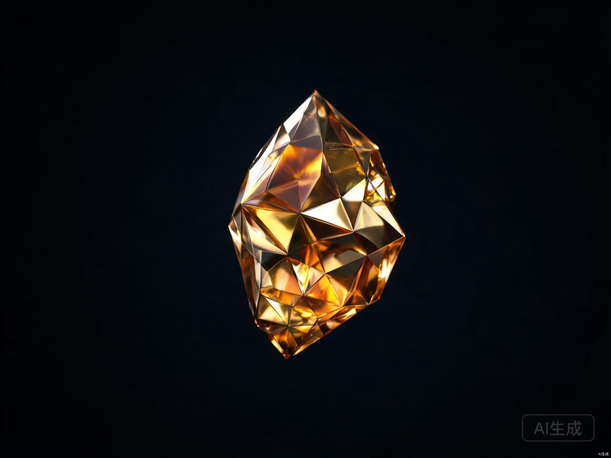

Native apps原生应用
Build, launch, and run apps directly on the Spak OS stack — sovereign by default.直接在 Spak OS 栈上构建、发布并运行应用——默认即主权。
The Native OS for the Open Economy开放经济的原生系统
Spak is a modular operating system for ownership: identity, assets, apps, and incentives unified on one native stack.Spak 是一套面向所有权的模块化操作系统：身份、资产、应用与激励，全部集成在同一原生栈上。
Spak is building the ownership layer for the open internet. We believe identity, data, and digital assets should live under user control — portable across apps, verifiable on-chain, and composable by default.Spak 正在为开放互联网构建所有权层。我们相信，身份、数据与数字资产应由用户掌控——可在应用间携带、链上可验证、默认可组合。
From wallets to dApps, every module on the OS accrues real utility. No walled gardens. No extracted attention. Just a native stack designed for the people who make the network alive.从钱包到去中心化应用，操作系统上的每个模块都在积累真实效用。没有封闭花园，没有注意力剥削。只有一个为网络注入生命力的人们而设计的原生栈。
System Modules系统模块
Build, launch, and run apps directly on the Spak OS stack — sovereign by default.直接在 Spak OS 栈上构建、发布并运行应用——默认即主权。
A shared kernel for identity, assets, and incentives that any module can compose.身份、资产与激励的共享内核，任何模块都可以自由组合。

One portable identity and wallet that moves with you across the ecosystem.一个可携带的身份与钱包，随你穿梭于整个生态系统。
The Vault金库
The economic engine of the Spak OS. Stake, earn, and unlock protocol incentives across every connected module.Spak OS 的经济引擎。质押、赚取，并在每一个连接模块中解锁协议激励。
$0 $0万
Total Value Locked总锁仓价值
0+ 0+
Active Users活跃用户
0+ 0万+
On-chain Actions链上操作
Backed by the best in open systems and crypto开放系统与加密领域顶尖机构支持
Join the native OS turning ownership into infrastructure.加入将所有权转化为基础设施的原生操作系统。
Install the OS安装系统 Install the OS安装系统